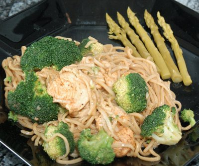

| Zutaten für 4 Personen: | |
| 8 | grüne Spargeln (frisch/Dose) |
| einige | Broccoliröschen |
| 600 g | Pouletschnitzel |
| 400 g | frische Nudeln |
| Salz | |
| 2 EL | Instant Bratensauce (Tube) |
| Öl | |
| Salz | |
| Pfeffer | |
| Paprika | |
| 1 El | Currypulver |
Spargeln rüsten, Broccoliröschen halbieren, Pouletfleisch in Streifen schneiden.
Spargeln, Broccoli und Nudeln separat in Salzwasser garen. Bratensauce mit 2dl heissem Wasser aufkochen.
Fleisch braten und würzen. Curry dünsten, mit etwas Wasser ablöschen und die Nudeln darin wenden. Mit Broccoli mischen und mit den übrigen Zutaten anrichten.
Migros Restaurant, 2.-7. März 1992.
Am 20.11.1998 von RE getestet. Schmeckt hervorragend. Allerdings sind die Spargeln, wenn sie aus der Dose kommen
etwas störend kalt. Also irgendwie aufheizen.
Habe es am 19.11.2007 in der Mikrowelle probiert.... Die explodieren ja voll. Macht Spass, bis jemand den
Mikrowellen-Ofen putzen muss anschliessend...